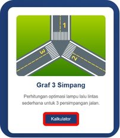
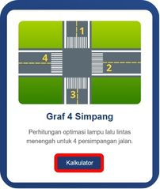
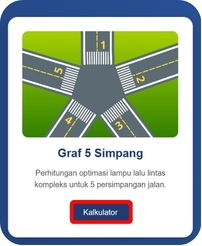
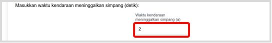
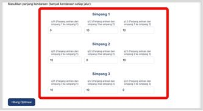
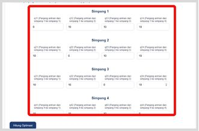
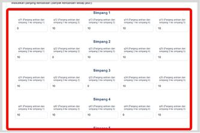
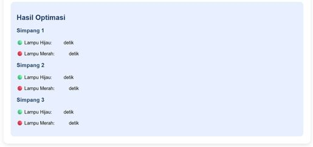
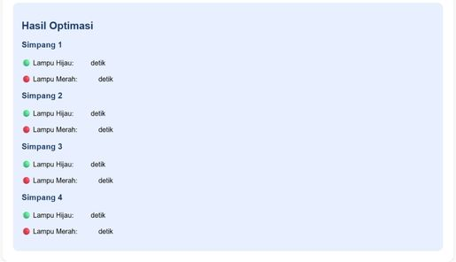
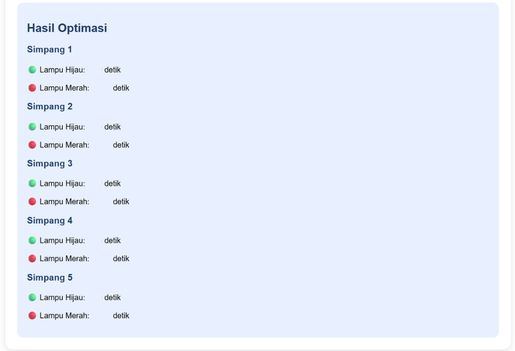

Pendahuluan
Kalkulator optimasi lampu lalu lintas simpang ini dikembangkan untuk membantu perhitungan dan
pengaturan waktu lampu lalu lintas pada persimpangan tiga, empat, atau lima arah agar arus kendaraan
lebih efisien dan teratur. Pengguna dapat memasukkan data seperti jumlah kendaraan
dan waktu yang dibutuhkan untuk melalui simpangan. Kalkulator ini ber untuk memperoleh hasil simulasi dan optimasi secara lebih mudah dan terstruktur.
Cara Penggunaan
- Pilih dan tekan kalkulator simpangan sesuai kebutuhan

Kalkulator Graf 3 simpang

Kalkulator Graf 4 simpang

Kalkulator Graf 5 simpang
- Masukkan waktu yang diperlukan kendaraan meninggalkan simpangan (detik)

Waktu rata-rata kendaraan
- Masukkan banyak kendaraan untuk setiap simpang sesuai dengan tujuan simpang

Banyak Kendaraan Graf 3 simpang

Banyak Kendaraan Graf 4 simpang

Banyak Kendaraan Graf 5 simpang
- Jalankan simulasi dengan menekan tombol Hitung Optimasi
- Hasil akan muncul di bawah

Hasil Graf 3 Simpang

Hasil Graf 4 Simpang

Hasil Graf 5 Simpang
- Jika ingin mengganti kalkulator simpang lainnya bisa tekan menu
Catatan
- Seluruh waktu pada kalkulator ini menggunakan satuan detik.
- Hasil perhitungan berlaku dengan asumsi bahwa waktu tempuh per kendaraan dan jumlah kendaraan tetap atau tidak berubah.
- Perhitungan hanya mempertimbangkan waktu yang dibutuhkan satu kendaraan untuk melewati simpangan serta jumlah kendaraan pada simpangan.
Download Buku Panduan PDF